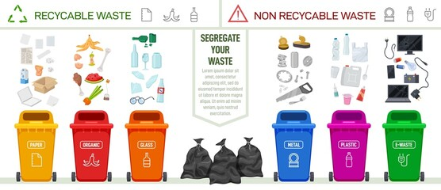
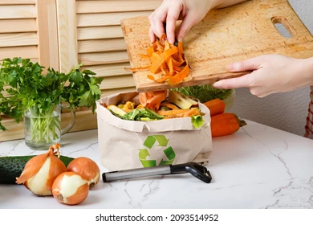

Its NOW or NEVER!
Take this below-listed actions the next time you dispose off your household waste. Remember, we are all together in this journey and every single contribution counts!
Cuz, You matter and so does our Environment!Waste Segregation
Separate household waste into biodegradable and non-biodegradable at the source for easier recycling and processing.
Composting Tips
Convert organic waste into nutrient-rich compost by setting up a small compost bin in your garden.

Reduce Plastic Usage
Opt for reusable items like metal water bottles and cloth bags to reduce plastic waste and pollution.

Avoid Single-Use Plastics
Reduce your dependence on single-use plastics by switching to reusable straws, utensils, and food containers.

Switch to Cloth Napkins
Replace paper napkins with reusable cloth napkins to cut down on disposable paper waste in your daily life.

Eco-Friendly Cleaning Products
Choose biodegradable, non-toxic cleaning products to minimize chemical runoff and pollution in waterways.

DIY Household Cleaners
Make your own natural cleaning solutions using ingredients like vinegar and baking soda to reduce chemical waste.

Switch to Solar Energy
Reduce your carbon footprint by installing solar panels or using solar-powered devices. Harnessing renewable energy from the sun lowers energy bills and decreases reliance on fossil fuels.
Buy in Bulk
Purchase items in bulk to minimize packaging waste and reduce the environmental impact of frequent shopping trips.

Upcycling Old Items
Repurpose old or broken household items instead of throwing them away. This reduces waste and promotes creativity.

Donate Instead of Disposing
Donate usable clothing, electronics, and household goods to reduce waste and help those in need.

Reduce Food Waste
Plan meals, store food properly, and use leftovers to minimize food waste in your household.
Choose Recycled Products
Opt for products made from recycled materials, such as paper, plastic, and glass, to support sustainable production.

Grow Your Own Food
Start a home garden or grow herbs indoors to reduce your carbon footprint and minimize packaging waste from store-bought produce.